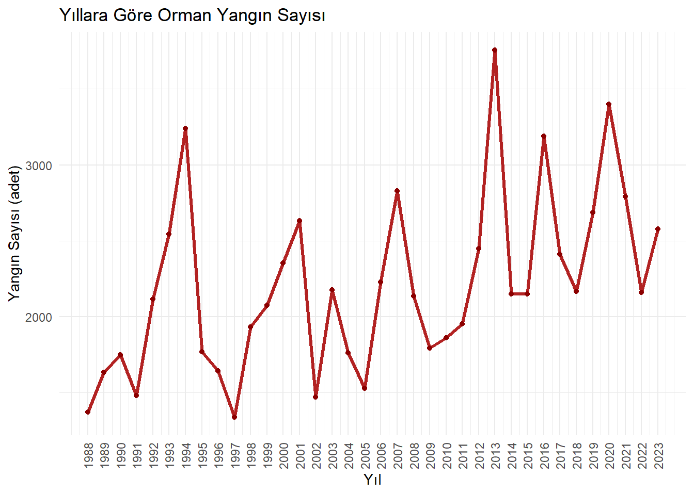
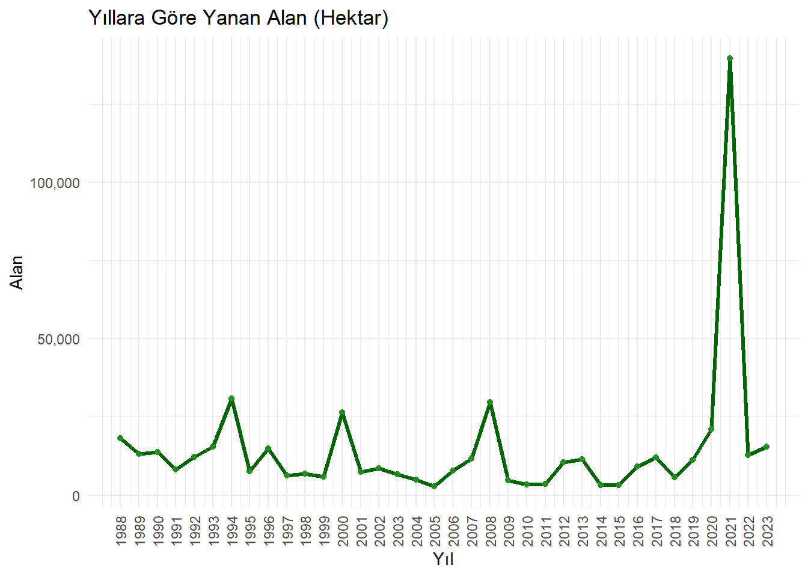
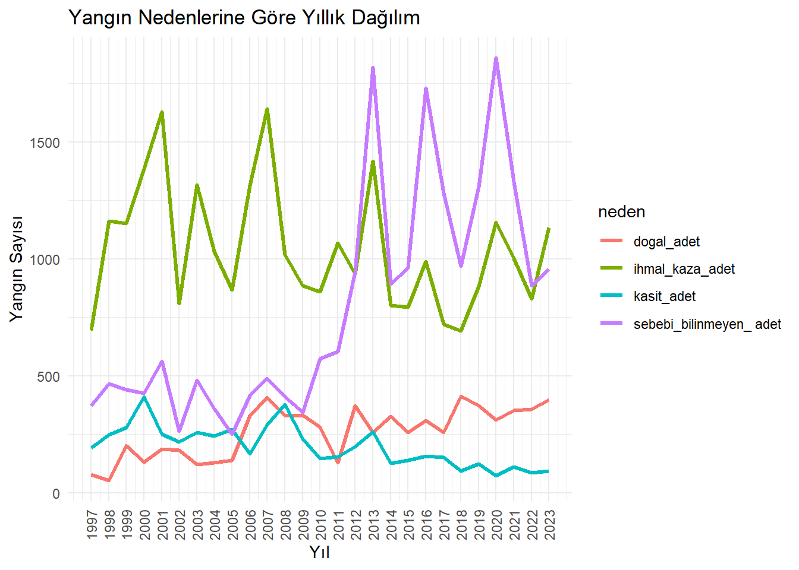
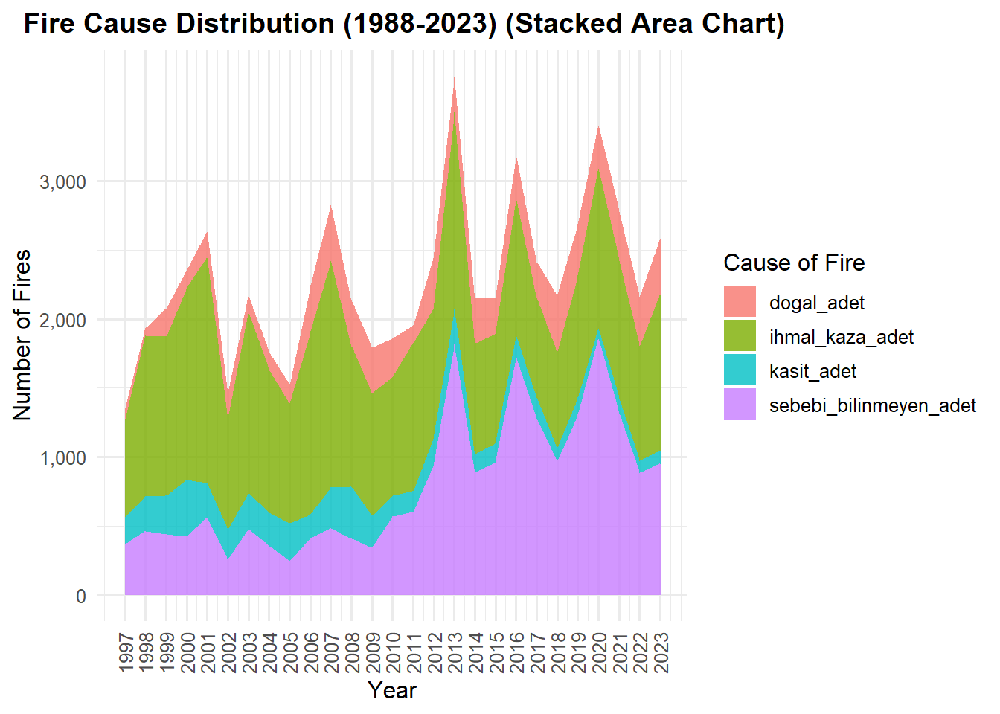
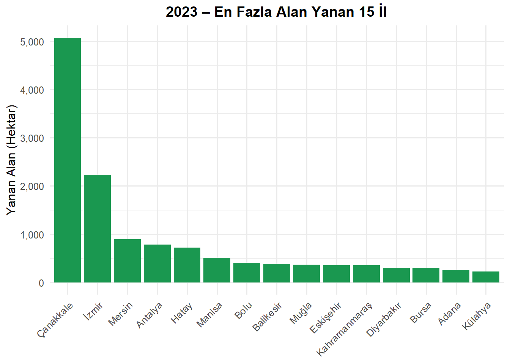
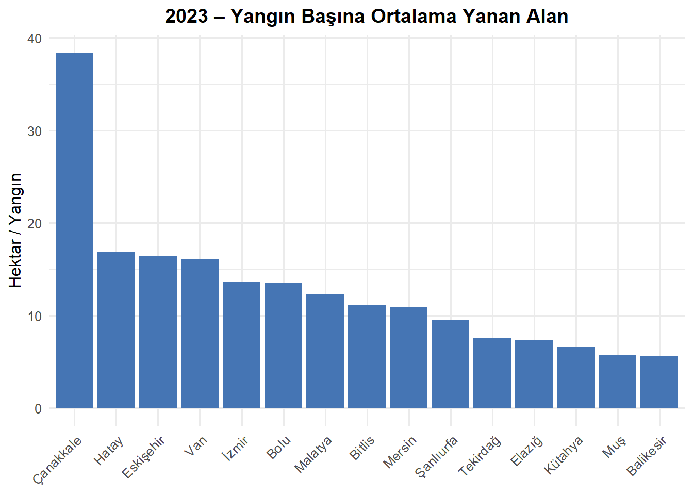
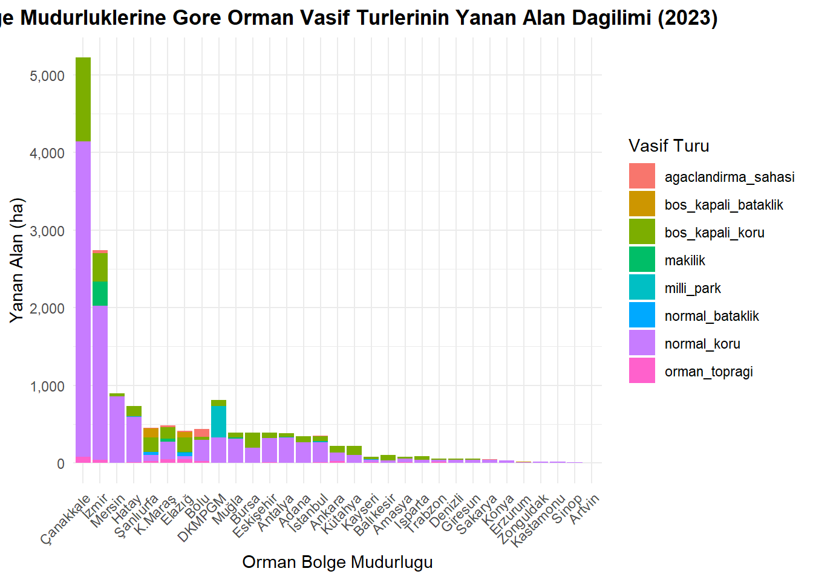
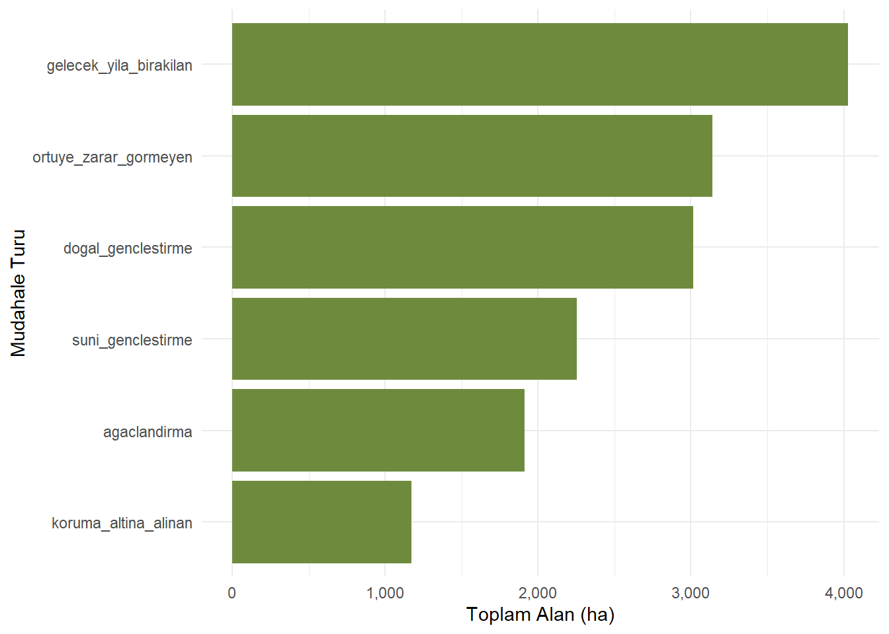
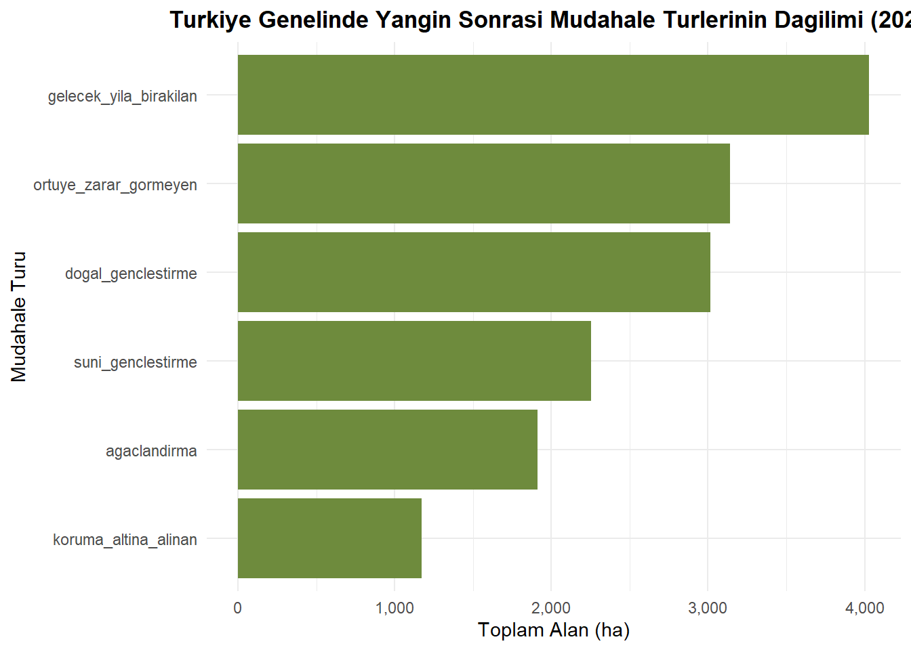
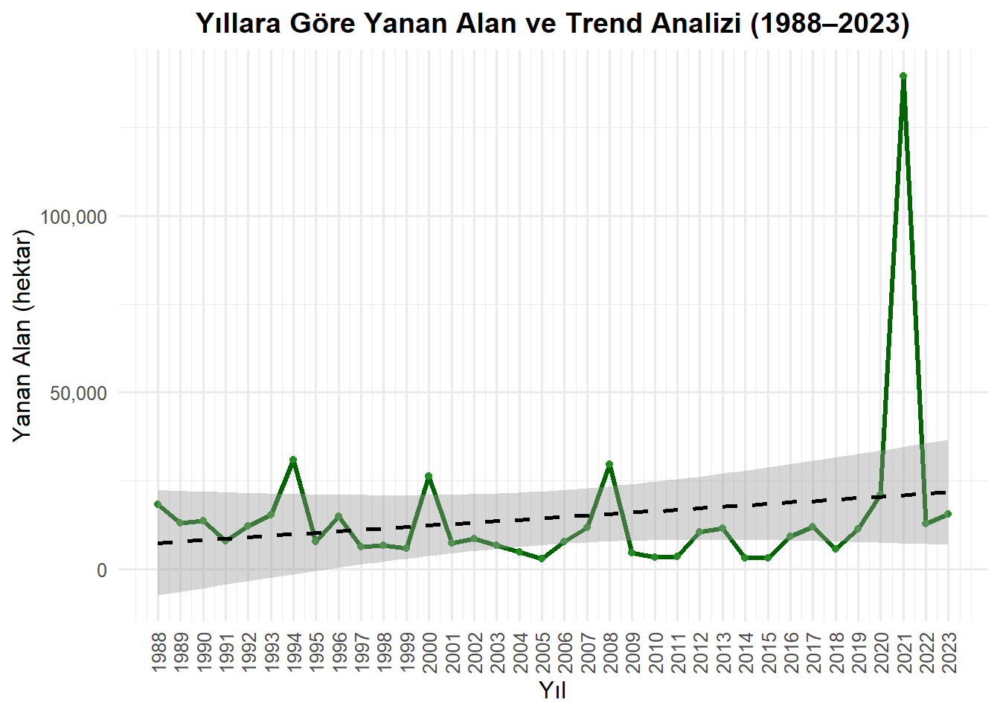

PROJE: Türkiye’de Orman Yangınları Analizi (1988–2023)
Bu sayfa, Türkiye’deki orman yangınlarının nedenleri, dağılımı ve sonuçları üzerine yapılan veri analizi projesini sunmaktadır.
Gelişmeler için bu alanı takip edebilirsiniz.
1 Proje Tanımı ve Kapsamı
Bu projede, Türkiye’deki orman yangınlarının zaman içindeki değişimi, bölgesel dağılımı ve yangın sonrası uygulamalar analiz edilecektir. Çalışmanın amacı, yangınların nedenlerini ve etkilerini daha iyi anlayarak politika önerileri geliştirmektir.
1.1 Problem Tanımı
Türkiye’de orman yangınları hem çevresel hem de ekonomik ciddi sonuçlar doğurmaktadır. Bu çalışma ile: - 1988–2023 yılları arasındaki yangın nedenlerinin ve yanan alanların değişimi, - 2023 yılına özel bölgesel ve niteliksel yangın dağılımları, - Yangın sonrası silvikültürel uygulamalar analiz edilecektir.
1.2 Hedeflerimiz
Yangın nedenlerinin yıllar içerisindeki değişimini incelemek,
Bölge müdürlüklerine göre yangın sayısı ve yanan alanı karşılaştırmak,
2023 yılı yangınlarının etkilerini değerlendirmek,
Bulguları grafik ve tablolarla sunmak ve politika önerileri geliştirmek,
2 Veri
2.1 Veri Kaynağı
Veriler, Orman Genel Müdürlüğü (OGM) tarafından yayımlanan resmi Excel dosyalarından alınmıştır.
Türkiye’ye özgü, resmi ve güvenilir bir kaynak olması,
Uzun yıllara yayılan ve çok yönlü analiz yapmaya elverişli veri içeriği sunması,
R programlama dili ile ileri veri analizleri ve modelleme çalışmalarına uygunluk sağlaması.
2.5 Veri Ön İşleme
Verileri R ortamına aktarırken aşağıdaki adımlar uygulanmıştır:
Dosya İsimlerini Düzenleme: TR’de dosya isimlerinde Türkçe karakterler (ç, ğ, ü, ö, ş, ı) bazen hata oluşturduğundan dolayı dosya isimlerindeki Türkçe karakterleri İngilizce karakterlere çevrildi. Örneğin: “bölge_mudurluklerine_sayisal_olarak_2004_2023.xlsx” dosyasını “bolge_mudurluklerine_sayisal_olarak_2004_2023.xlsx” olarak değiştirildi.
Veri Temizleme: Excel dosyalarındaki gereksiz açıklamalar, görseller, boş satırlar gibi analizle ilgisi olmayan içerikleri silindi. Böylece veri setlerinin doğrudan okunabilir ve işlenebilir hale gelmesini sağlandı.
Sütun İsimlerini Düzenleme: o Sütun isimlerindeki Türkçe karakterleri İngilizce karakterlerle değiştirdim (Şehir yerine Sehir, Bölge yerine Bolge gibi). o Ayrıca sütun adlarını daha açıklayıcı hale getirdim. Örneğin: yangın sebeplerine göre ihmal, kaza, kasıt ana kategorilerini detaylandırarak şu şekilde isimlendirdim: ihmal_copluk, ihmal_avcilik kaza_trafik, kaza_enerji kasit_yangin, kasit_aniz
Veri Yapısını Düzenleme: Aynı kategorideki veriler bir araya getirildi.
Veri İçe Aktarma:read.xlsx() fonksiyonu ile xlsx paketinden veriler aktarıldı (encoding = "UTF-8" kullanıldı).
Planlanan İleri Ön İşleme Adımları:
Veri tiplerinin düzenlenmesi (character, numeric vs.),
3.1 Keşifsel Veri Analizi (Exploratory Data Analysis)
Kod
library(readxl)library(tidyr)library(dplyr)library(ggplot2)library(scales)# Veriyi oku (uyarıları bastır)df <-suppressMessages(read_excel("C:/Users/aktas/OneDrive/yangin_verisi/orman_yanginlari1988_2023.xlsx"))# Sayısal kolonları temizle + dönüştür (uyarıları bastır)df$yil <-suppressWarnings(as.numeric(df$yil))df$adet <-suppressWarnings(as.numeric(gsub("[^0-9.]", "", df$adet)))df$hektar <-suppressWarnings(as.numeric(gsub("[^0-9.]", "", df$hektar)))# NA'ları temizledf <- df |>filter(!is.na(yil), !is.na(adet), !is.na(hektar))# Grafik 1: Yangın Sayısıprint(ggplot(df, aes(x = yil, y = adet)) +geom_line(linewidth =1.2, color ="firebrick") +geom_point(color ="darkred") +scale_x_continuous(breaks =seq(min(df$yil), max(df$yil), by =1)) +labs(title ="Yıllara Göre Orman Yangın Sayısı",x ="Yıl", y ="Yangın Sayısı (adet)") +theme_minimal() +theme(axis.text.x =element_text(angle =90, vjust =0.5)))

Kod
# Grafik 2: Yanan Alan (DÜZENLENDİ: Y ekseni okunaklı)print(ggplot(df, aes(x = yil, y = hektar)) +geom_line(linewidth =1.2, color ="darkgreen") +geom_point(color ="forestgreen") +scale_x_continuous(breaks =seq(min(df$yil), max(df$yil), by =1)) +scale_y_continuous(labels =label_comma()) +labs(title ="Yıllara Göre Yanan Alan (Hektar)",x ="Yıl", y ="Alan") +theme_minimal() +theme(axis.text.x =element_text(angle =90, vjust =0.5)))

Kod
# Grafik 3: Yangın Nedenlerineden_df <- df |>select(yil, kasit_adet, ihmal_kaza_adet, dogal_adet, `sebebi_bilinmeyen_ adet`) |>mutate(across(-yil, ~suppressWarnings(as.numeric(gsub("[^0-9.]", "", .))))) |>pivot_longer(cols =-yil, names_to ="neden", values_to ="adet") |>filter(!is.na(adet))print(ggplot(neden_df, aes(x = yil, y = adet, color = neden)) +geom_line(linewidth =1.1) +scale_x_continuous(breaks =seq(min(neden_df$yil), max(neden_df$yil), by =1)) +labs(title ="Yangın Nedenlerine Göre Yıllık Dağılım",x ="Yıl", y ="Yangın Sayısı") +theme_minimal() +theme(axis.text.x =element_text(angle =90, vjust =0.5)))

Kod
library(readxl)library(dplyr)library(ggplot2)library(scales)# Veriyi okuiller <-read_excel("C:/Users/aktas/OneDrive/yangin_verisi/iller_2023.xlsx")# Sayısal düzeltme + Türkiye satırını çıkariller <- iller |>filter(sehir !="Türkiye") |>mutate(adet =as.numeric(gsub(",", ".", adet)),hektar =as.numeric(gsub(",", ".", hektar)) ) |>filter(adet >0, hektar >0) |>mutate(orani = hektar / adet)# Grafik 1: En Çok Yangın Çıkan İlk 15 İlprint( iller |>arrange(desc(adet)) |>slice_head(n =15) |>ggplot(aes(x =reorder(sehir, -adet), y = adet)) +geom_bar(stat ="identity", fill ="#d73027") +labs(title ="2023 – En Çok Yangın Çıkan 15 İl",x =NULL, y ="Yangın Sayısı") +theme_minimal(base_size =12) +theme(axis.text.x =element_text(angle =45, hjust =1),plot.title =element_text(face ="bold", hjust =0.5) ) +scale_y_continuous(labels =label_comma(accuracy =1)))

Kod
# Grafik 2: En Fazla Alan Yanan İlk 15 İlprint( iller |>arrange(desc(hektar)) |>slice_head(n =15) |>ggplot(aes(x =reorder(sehir, -hektar), y = hektar)) +geom_bar(stat ="identity", fill ="#1a9850") +labs(title ="2023 – En Fazla Alan Yanan 15 İl",x =NULL, y ="Yanan Alan (Hektar)") +theme_minimal(base_size =12) +theme(axis.text.x =element_text(angle =45, hjust =1),plot.title =element_text(face ="bold", hjust =0.5) ) +scale_y_continuous(labels =label_comma(accuracy =1)))

Kod
# Grafik 3: Yangın Başına Ortalama Yanan Alan (etkililik)print( iller |>arrange(desc(orani)) |>slice_head(n =15) |>ggplot(aes(x =reorder(sehir, -orani), y = orani)) +geom_bar(stat ="identity", fill ="#4575b4") +labs(title ="2023 – Yangın Başına Ortalama Yanan Alan",x =NULL, y ="Hektar / Yangın") +theme_minimal(base_size =12) +theme(axis.text.x =element_text(angle =45, hjust =1),plot.title =element_text(face ="bold", hjust =0.5) ) +scale_y_continuous(labels =label_comma(accuracy =1)))

Kod
library(readr)library(readxl)library(dplyr)library(leaflet)library(stringi)# Türkçe karakter düzeltme fonksiyonuduzelt <-function(x) {tolower(stri_trans_general(x, "Latin-ASCII"))}# 1. İl koordinat verisini yükle (il.csv dosyan)koord <-read_csv("C:/Users/aktas/OneDrive/yangin_verisi/il.csv") |>mutate(il_adi =duzelt(il_adi)) |>select(sehir = il_adi, lat, lon)# 2. 2023 yılı yangın verisini oku ve temizleiller <-read_excel("C:/Users/aktas/OneDrive/yangin_verisi/iller_2023.xlsx") |>filter(sehir !="Türkiye") |>mutate(sehir =duzelt(sehir),adet =as.numeric(gsub(",", ".", adet)),hektar =as.numeric(gsub(",", ".", hektar)) )# 3. Koordinatlar ile yangın verisini birleştiriller_map <-left_join(koord, iller, by ="sehir") |>filter(!is.na(lat), !is.na(hektar))# 4. Leaflet haritası oluşturleaflet(data = iller_map) |>addProviderTiles("CartoDB.Positron") |>addCircleMarkers(lng =~lon, lat =~lat,radius =~sqrt(hektar)/2,color ="darkred",stroke =FALSE,fillOpacity =0.7,popup =~paste0("<b>", toupper(sehir), "</b><br>","Yangın Sayısı: ", adet, "<br>","Yanan Alan: ", hektar, " ha" ) )
Kod
library(readxl)library(dplyr)library(tidyr)library(ggplot2)library(scales)# Excel dosyasını oku (tam yol)vasif_df <-read_excel("C:/Users/aktas/OneDrive/yangin_verisi/vasfina_2023.xlsx", .name_repair ="minimal")# Sütun isimlerini Türkçe karaktersiz olarak ayarlacolnames(vasif_df) <-c("bolge", "toplam_hektar", "normal_koru", "bos_kapali_koru","normal_bataklik", "bos_kapali_bataklik", "makilik","agaclandirma_sahasi", "milli_park", "orman_topragi")# "Toplam-Total" satırını çıkar (tek satırlık toplam veridir, grafik dışında tutuyoruz)vasif_df <- vasif_df |>filter(bolge !="Toplam-Total")# "-" karakterlerini NA yap ve sayıya çevirvasif_df <- vasif_df |>mutate(across(-bolge, ~as.numeric(gsub("-", NA, .))))# Uzun formata pivotla (grafik için)vasif_long <- vasif_df |>pivot_longer(cols =-c(bolge, toplam_hektar),names_to ="vasif_turu",values_to ="alan") |>filter(!is.na(alan), alan >0)# Grafik: Bölge müdürlüklerine göre vasıf türlerinin dağılımıggplot(vasif_long, aes(x =reorder(bolge, -toplam_hektar), y = alan, fill = vasif_turu)) +geom_bar(stat ="identity") +labs(title ="Bolge Mudurluklerine Gore Orman Vasif Turlerinin Yanan Alan Dagilimi (2023)",x ="Orman Bolge Mudurlugu",y ="Yanan Alan (ha)",fill ="Vasif Turu" ) +theme_minimal(base_size =11) +theme(axis.text.x =element_text(angle =45, hjust =1),plot.title =element_text(face ="bold", hjust =0.5) ) +scale_y_continuous(labels =label_comma())

Kod
library(readxl)library(dplyr)library(tidyr)library(ggplot2)library(scales)# Veriyi okusilvi_df <-read_excel("C:/Users/aktas/OneDrive/yangin_verisi/silvikulturel_2023.xlsx", .name_repair ="minimal")# Sütun adları sadecolnames(silvi_df) <-c("bolge", "toplam_alan", "ortuye_zarar_gormeyen","dogal_genclestirme", "suni_genclestirme", "rehabilitasyon","agaclandirma", "koruma_altina_alinan", "gelecek_yila_birakilan")# Toplam satırı çıkarsilvi_df <- silvi_df |>filter(bolge !="Toplaml")# Sayısallaştırsilvi_df <- silvi_df |>mutate(across(-bolge, ~as.numeric(gsub("-", NA, .))))# Müdahale türü toplamlarını hesaplaturkiye_geneli <- silvi_df |>select(-toplam_alan) |>pivot_longer(cols =-bolge,names_to ="mudahale_turu",values_to ="alan") |>filter(!is.na(alan)) |>group_by(mudahale_turu) |>summarise(toplam_alan =sum(alan)) |>arrange(desc(toplam_alan))# Başlıkcat(" Grafik: Türkiye Genelinde Yangın Sonrası Müdahale Türlerinin Dağılımı (2023)\n")
Grafik: Türkiye Genelinde Yangın Sonrası Müdahale Türlerinin Dağılımı (2023)
Kod
# Grafikprint(ggplot(turkiye_geneli, aes(x =reorder(mudahale_turu, toplam_alan), y = toplam_alan)) +geom_bar(stat ="identity", fill ="darkolivegreen4") +coord_flip() +labs(title =NULL,x ="Mudahale Turu", y ="Toplam Alan (ha)" ) +theme_minimal(base_size =11) +theme(plot.title =element_text(face ="bold", hjust =0.5)) +scale_y_continuous(labels =label_comma()))

Yukarıdaki grafik, 2023 yılında orman yangınlarından etkilenen alanlara uygulanan silvikültürel müdahale türlerini ve bu müdahalelerin toplam alan (hektar) cinsinden büyüklüklerini göstermektedir. En büyük payı, herhangi bir müdahale yapılmayarak gelecek yıla bırakılan alanlar oluşturmaktadır. Onu sırasıyla örtüye zarar görmeyen alanlar ve doğal gençleştirme uygulamaları takip etmektedir. En az müdahale ise koruma altına alınan alanlarda yapılmıştır.
3.2 Trend Analizi
Zaman içinde yangınların sayısı ve yanan alanların değişim trendleri analiz edilecektir.
Kod
library(readxl)library(dplyr)library(ggplot2)library(scales)# Veriyi oku ve temizledf <-read_excel("C:/Users/aktas/OneDrive/yangin_verisi/orman_yanginlari1988_2023.xlsx") |>mutate(yil =as.numeric(yil),adet =as.numeric(gsub("[^0-9.]", "", adet)),hektar =as.numeric(gsub("[^0-9.]", "", hektar)) ) |>filter(!is.na(yil), !is.na(adet), !is.na(hektar))# Grafik 1: Yangın Sayısıggplot(df, aes(x = yil, y = adet)) +geom_line(color ="firebrick", linewidth =1.2) +geom_point(color ="darkred") +geom_smooth(method ="lm", se =TRUE, color ="black", linetype ="dashed") +labs(title ="Yıllara Göre Orman Yangın Sayısı ve Trend Analizi (1988–2023)",x ="Yıl",y ="Yangın Sayısı (adet)" ) +theme_minimal(base_size =12) +theme(axis.text.x =element_text(angle =90, vjust =0.5),plot.title =element_text(face ="bold", hjust =0.5) ) +scale_x_continuous(breaks =seq(min(df$yil), max(df$yil), by =1)) +scale_y_continuous(labels =label_comma())

Kod
#----------------------------------------------------------# Grafik 2: Yanan Alanggplot(df, aes(x = yil, y = hektar)) +geom_line(color ="darkgreen", linewidth =1.2) +geom_point(color ="forestgreen") +geom_smooth(method ="lm", se =TRUE, color ="black", linetype ="dashed") +labs(title ="Yıllara Göre Yanan Alan ve Trend Analizi (1988–2023)",x ="Yıl",y ="Yanan Alan (hektar)" ) +theme_minimal(base_size =12) +theme(axis.text.x =element_text(angle =90, vjust =0.5),plot.title =element_text(face ="bold", hjust =0.5) ) +scale_x_continuous(breaks =seq(min(df$yil), max(df$yil), by =1)) +scale_y_continuous(labels =label_comma())

3.3 Modelleme
Gerekirse yangın nedenleri ve etkileri üzerine istatistiksel modeller kurulacaktır.
3.4 Sonuçlar
Elde edilen bulgular grafikler ve tablolarla sunulacaktır.
4 Sonuçlar ve Öneriler
Çalışmadan elde edilen temel bulgular özetlenecek ve politika yapıcılar için öneriler geliştirilecektir.
Not: Bu projede belirli kod bloklarının hazırlanması ve veri yükleme yöntemlerinin düzenlenmesi aşamasında ChatGPT’den destek alınmıştır.